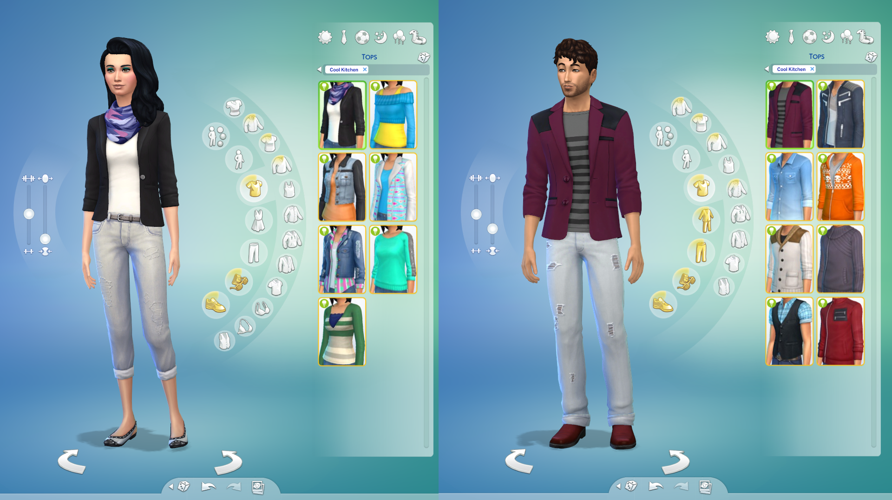
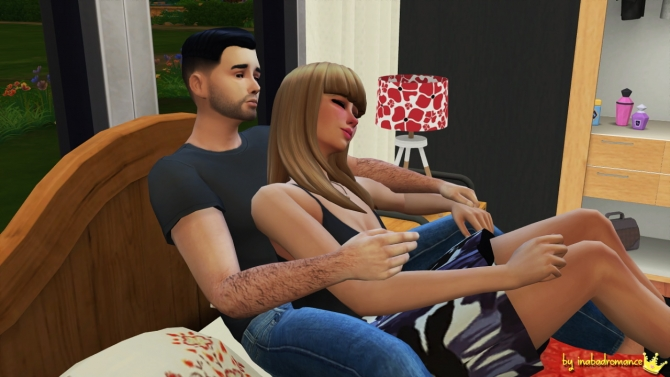

The Sims 4
"The Sims 4 is very much like the previous Sims, just better!" Well, my very good sir/lady, that can be discussed. It all depends on how you view the new changes. Let's start with a short introduction for newcomers:
"Like the previous games in the series, The Sims 4 focuses on creating and controlling a neighborhood of virtual people, called "Sims". The Sims 4 boasts an overhauled and intuitive Create a Sim, updated building tools, and deeper, more complex Sims through the addition of emotions and new traits. The Sims 4 is the highly anticipated life simulation game that lets you play with life like never before. Control smarter Sims with unique appearances, personalities, behaviors, and emotions. Experience new levels of creativity when you sculpt Sims with the powerful Create A Sim and design beautiful homes with tactile, room-based Build Mode. Use The Gallery to browse, share, and download new content without ever leaving your game. Control the mind, body, and heart of your Sims and explore your new gameplay possibilities in vibrant neighborhoods that bring your stories to life."
Information
- Title: The Sims 4
- Genre: Simulation, Dating Simulation, RPG
- Developer: Maxis, The Sims Studio
- System: PC
- Length: ∞ hrs
- Release Date: 04.08.2014 (EU)
Review
Creating your sim
So, with the new tools it is much easier to change a sims features. Instead of a bar where you use the slider to increase or decrease a specific feature, you can instead drag directly on the sim to do so. This saves time. Also when choosing an item/set of clothing in the game, you have specific styles with a certain domain you can choose from instead of being able to design all the patterns and such. Personally, I found this VERY helpful compared to The Sims 3, because the game is less prone to lagging and you can get a stylish outfit without too much hassle. Note that they even have the same type of "dragging" for the building tools. Instead of removing a chunk of ur wall to make it bigger or smaller, you can just drag! This makes building houses a lot easier!
The thing I didn't like with this new version was that it misses a lot of the new expansion packages and you have to LOAD to get to a new area just like in The Sims 2. This part I'm REALLY gonna miss from The Sims 3.

One thing will lead to another, and then WOOHOO!
SOOO, you wonder how The Sims 4 has something to do with romance? Weeell, because the sims interact with eachother some of them are bound to get romantically interested in eachother. One thing leads to another and WOOHOO! a child or two. By the next month you have a whole new family. AWESOME! It all depends on how you would like to play, that is. Want to fill your graveyard full of gravestones and ghosts? FEEL FREE.
I personally LOVE the Sims. But I have too many expansionspaclages downloaded on my The Sims 3, so I can't play without the game suddenly freeze and make me lose all my progress. Therefore, I play the Sims 4. But I really like that you can open your own store in the Sims 4.